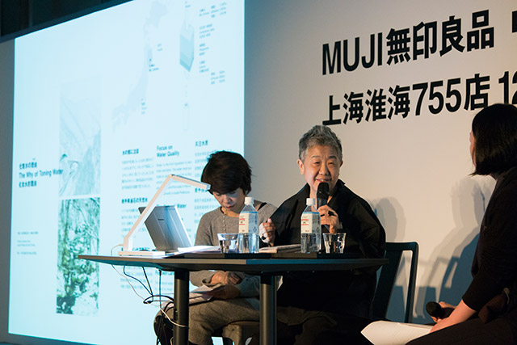
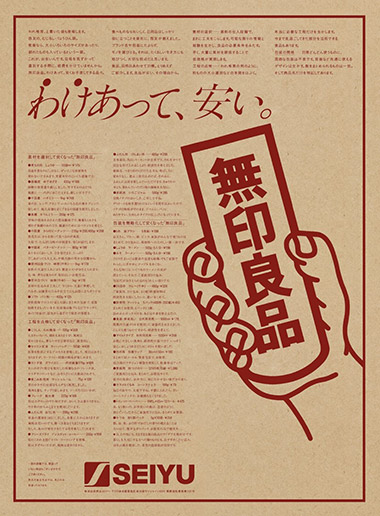
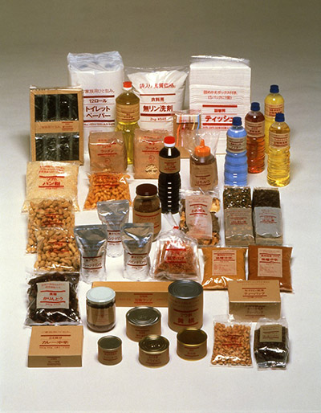
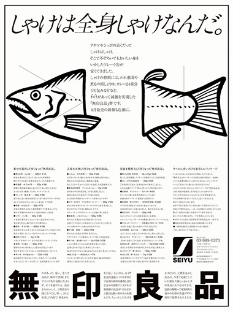
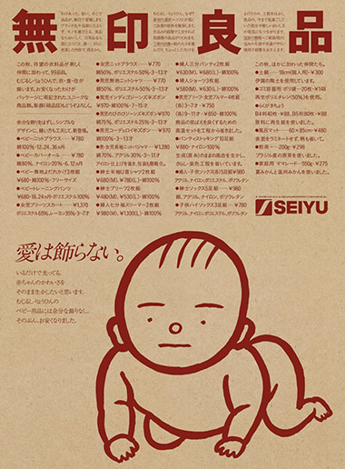

Kazuko Koike
Today, I’ll talk in Japanese about MUJI, or no-brand quality goods. I’ll tell you about the overall image of the lifestyle goods known globally as MUJI, and the story of MUJI goods, from their creation to the present. Actually, I share a bit of the responsibility for MUJI’s creation. I was the midwife in the process, so to speak. I chose to use the phrase “a life” in the title of my talk today, because it is, in part, a record of my life with MUJI, as well.
In December 1980, MUJI was revealed in major Japanese newspapers in a monochrome ad.
Our art director at the time, Ikko Tanaka, was said to be the best at keeping traditional Japanese aesthetics in modern design, and he used MUJI’s corporate color to print a poster on kraft paper. The visual is based on an iconic image in Japanese period dramas where a card is held up indicating the correct answer to a given situation. The card printed with “MUJI” was such a well-known visual that even grandfathers, grandmothers, and children understood that it meant “MUJI is it!”I think everybody who saw the Japanese characters for no-brand quality goods (MUJI) for the first time wondered, “What is this?” I wrote this ad. The catch phrase is, “Lower priced for a reason.” “Reason” means the reason for these products. This poster explains why we’re able to offer each product for a reasonable price. Most advertising presents a slogan promoting how wonderful an item is. But this ad doesn’t say a word about how wonderful the products are. We don’t need a brand name to sell products, because they are already meaningful in themselves. MUJI simply communicates the value of an item. It takes a “hands-off” approach by simply presenting the item itself. In the 1980s, the Japanese economy was thriving, headed for what we ended up calling the bubble economy. It became standard to sell products at a price much higher than the actual quality by slapping the logo of a famous brand on them. At MUJI, we thought that was an improper application of added value. A product design that accurately communicates an item’s true value is important. This is almost a joke, but a toilet paper holder cover embroidered with the CHANEL logo was sold at that time in Japan. If Coco Chanel were alive, she’d probably have thought, “Oh my. My name is being used in the toilet.” The MUJI poster from that time is printed with Seiyu, the name of a supermarket where MUJI started. Seiji Tsutsumi was the owner of both Seibu Department Store and Seiyu. In 1979, he brought together managers, designers, and writers like me, and others, to brainstorm on creating a private brand. We discussed what kind of brand we wanted to make in Japan at that time. That was the actual starting point for MUJI.
At the time, there were 40 MUJI products. Today, MUJI Shanghai has 7,000 products, but we started with 40 very basic items.The number one requirement was to start with essential items for day-to-day life. The idea was that tools used in daily life have to be easy to use. If it was food, it had to be delicious, with safe ingredients. Clothes are chosen with a focus on materials, and comfort is valued. The production process is thoroughly inspected, and packaging simplified to avoid unnecessary costs. By achieving all of that, MUJI was confident it could present prices to consumers suitable to product content. Ever since, the foundation of MUJI’s corporate identity that we’ve inherited has kept growing.
Let me show you some posters from those days. At a glance, they are all quite plain and nothing particularly special. For example, there was a poster of dried shiitake mushrooms that were slightly damaged during the production process. In the Japanese market, only perfectly round shiitake were sold, but MUJI sold imperfectly shaped shiitake because they taste just as delicious. In another poster, the copy reads “The entire fish is salmon.” This is straightforward copy reminding readers that salmon is delicious head to tail, so all of it should be eaten. Even as the Japanese economy moved closer and closer toward an economic bubble, we had positive feedback from so many consumers back then who wanted to focus on the simple things in life. The concept of MUJI originated with an abundance of knowledge and research results from supermarket merchandising. The notion was also born that even better products come from things that have been overlooked or deviate from the standard. That was reflected in later product planning.Establishing MUJI was based on the three approaches of good products, good environment, and good information. Since the beginning, our products and information have been integrated as one. The idea of a “good environment” expresses the same spirit. In other words, we want our stores to be good settings for our products. At first, food and lifestyle accessories were developed for separate sections of Seiyu supermarkets. But realizing that, together, these products could create a cohesive lifestyle, we opened our first shop in Aoyama. Takashi Sugimoto designed the store. He put his full skills on display in this Shanghai store, too. The Aoyama store exterior is made from brick used in blast furnaces in Kyushu coalmines. It is these and other weathered materials that have created the space for this new store.
In our corporate advertising, the MUJI attitude was summed up in a single catch phrase, “Love doesn’t need embellishment.” To babies, materials gentle on the skin are an expression of their mother’s gentle love. Materials are more important than strong colors or lots of adornments. That was the foundation for this kind of symbolic visual. The illustration for this corporate ad was quickly sketched by my colleague, who has since passed away, Yuzo Yamashita. Using simple ink drawings, Ikko Tanaka’s art direction focuses plainly on a single idea.